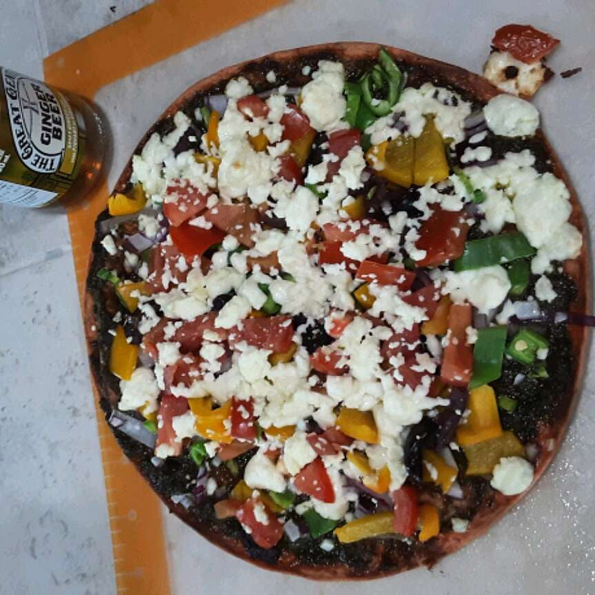

Pizza Bois

Description
A great alternative to your regular pizza.
Ingredients
- ½ cup pesto
- ½ cup green bell pepper, chopped
- small red onion, chopped
Steps
- Preheat oven to 450 degrees F (230 degrees C).
- Spread pesto on pizza crust. Top with tomatoes, bell peppers, olives, red onions, artichoke hearts and feta cheese.
- Bake for 8 to 10 minutes, or until cheese is melted and browned.